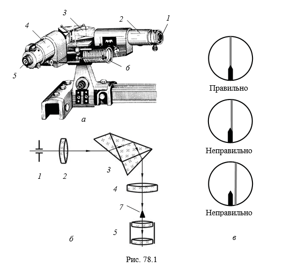
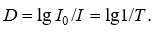

Описание установки и методов измерений:
Спектральные измерения в работе выполняются на универсальном призменном монохроматоре УМ-2, общий вид и оптическая схема которого изображены на рис. 78.1, а, б. Монохроматор включает в себя коллиматор, состоящий из входной щели 1 и объектива 2, и зрительную трубу, состоящую из объектива 4 и окуляра 5. Коллиматор и зрительная труба с указателем 7 расположены под прямым углом. В качестве диспергирующего элемента 3 используется призма постоянного отклонения Аббе. Сканирование по спектру осуществляется с помощью поворотного механизма путем вращения барабана 6, по шкале которого измеряется угол поворота. Перед выполнением измерений необходимо проградуировать монохроматор, т. е. привести в соответствие величины отсчетов барабана со значениями длин волн (либо частот) линий в известном эталонном спектре.
Под люминесцентным спектральным анализом понимают метод исследования химического состава вещества по спектру испускания атомов или ионов. Различают качественный и количественный спектральный анализ. Атомы разреженных газов или паров металлов обладают характерным для каждого элемента спектром люминесценции, состоящим из серий узких спектральных линий. Число линий, их частоты, относительные интенсивности, наличие мультиплетной структуры отражают уникальные свойства атомной структуры элементов, и задача качественного спектрального анализа состоит в обнаружении и идентификации в спектре люминесценции образца индивидуальных особенностей, по которым определяется наличие в образце определенного элемента. Количественный анализ основан на том, что значение интенсивности спектральных линий пропорционально концентрации данного типа излучающих атомов в исследуемом образце.
Спектральный анализ обладает высокой чувствительностью (определяются примеси с концентрацией 108–1010 моль/л), малым временем проведения исследования, позволяет анализировать состав образцов очень малой массы и объема вплоть до регистрации свечения одиночных атомов и молекул. Это один из наиболее распространенных методов контроля в химической промышленности, машиностроении, металлургии, геологии, астрофизике, криминалистике, медицинской диагностике, искусствоведческой экспертизе и др. Огромным преимуществом спектрального анализа является неинвазивность метода и возможность исследовать образец без непосредственного контакта с ним.
В атоме ртути на пяти внутренних заполненных оболочках со значениями главного квантового числа n от 1 до 5 находятся 78 электронов. Эти электроны в образовании оптического спектра не участвуют. Оптические переходы происходят с участием двух валентных 6s электронов 61S0 состояния (n = 6, l = 0), которое считается основным состоянием (рис. П3). Предполагается, что один из электронов всегда остается в невозбужденном 6s-состоянии, а второй участвует в оптических переходах. Поскольку орбитальное квантовое число первого электрона l1 = 0, то для атома результирующее орбитальное квантовое число L будет совпадать со значением l2 для второго электрона. Спиновый момент атома может быть либо S = 0, либо S = 1. Согласно правилам отбора (78.9)(78.11), возмож- ны синглет-синглетные и триплет-триплетные переходы. В видимой области спектра линии атома ртути с длинами волн 546,1, 435,8 и 404,7 нм соответствуют триплету, формирующемуся при переходах из 73S1 состояния в 63P2 , 63P1, 63P0 состояния.
Атом неона имеет две заполненные (n = 1, 2) электронные оболочки с 10 электронами (Z = 10). Замкнутой электронной оболочке соответствует равенство нулю всех трех квантовых чисел S, L, J. Таким образом, основным состоянием атома неона, равно как и у всех других инертных газов, будет состояние n1S0 . У атомов инертных газов имеет место сильное отступление от LS-связи, поэтому описанное выше обозначение термов теряет свою актуальность, так как физический смысл сохраняют лишь квантовые числа J. Любой электронный переход с участием основного состо- яния будет происходить с изменением главного квантового числа n, поэтому положение линий в спектре атома неона можно рассчи- тать по формуле (78.7) (см. спектр на рис. П3).
Люминесцентные энергосберегающие лампы относятся к газоразрядным источникам света и представляют собой стеклянные баллоны, наполненные смесью паров ртути и инертных газов. Газовый разряд происходит в парах ртути при низком давлении (0,8–1,33 Па) и генерирует главным образом ультрафиолетовое излучение, которое преобразуется в видимый свет люминофором, покрывающим внутренние стенки лампы. В излучении люминесцентных ламп на фон непрерывного спектра свечения люминофора накладывается линейчатый спектр видимого излучения газовой смеси. Меняя тип люминофора, можно менять спектральный состав люминесценции и, тем самым, цветовую температуру Тц лампы (рис. П4). Так как тепловое излучение таких источников мало, то их еще называют источниками холодного света.
Светофильтр – устройство, которое изменяет спектральный состав или энергию падающего на него светового потока. Основная характеристика светофильтра – пропускание T I /I0 , однако при использовании светофильтров часто удобно пользоваться величиной оптической плотности D:
Удобство обусловлено аддитивностью величины D, т. е. оптическая плотность нескольких последовательно расположенных фильтров равна сумме их оптических плотностей, а также тем, что величина оптической плотности пропорциональна концентрации поглощающего вещества в образце (закон Бугера – Ламберта – Бера).
Светофильтры называют нейтральными, если их оптическая плотность в определенном спектральном интервале не зависит от длины волны. Светофильтры, оптическая плотность которых является функцией длины волны, называют селективными. Селективные светофильтры предназначены для отделения (отрезания) широкой области спектра либо для выделения узкого спектрального интервала из широкой спектральной области. Для селективных фильтров важнейшей характеристикой является спектральная кривая оптической плотности D () или пропускания Т ().